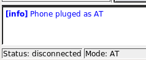
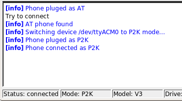

moto4lin
Archivierte Anleitung
Dieser Artikel wurde archiviert, da er - oder Teile daraus - nur noch unter einer älteren Ubuntu-Version nutzbar ist. Diese Anleitung wird vom Wiki-Team weder auf Richtigkeit überprüft noch anderweitig gepflegt. Zusätzlich wurde der Artikel für weitere Änderungen gesperrt.
Zum Verständnis dieses Artikels sind folgende Seiten hilfreich:
moto4lin  ist ein Programm, das es erlaubt, via USB-Schnittstelle auf das Dateisystem eines Motorola-Mobiltelefons zuzugreifen. Es ist möglich, vorhandene Dateien zu löschen oder herunterzuladen. Auch können Dateien via Upload auf das Mobiltelefon übertragen werden. Welche Funktionen darüber hinaus zur Verfügung stehen (SEEM-Editor, Java-Programme verwalten), ist auf der Homepage des Programms beschrieben. Hier ist auch aufgelistet, welche Mobiltelefone von moto4lin unterstützt werden.
ist ein Programm, das es erlaubt, via USB-Schnittstelle auf das Dateisystem eines Motorola-Mobiltelefons zuzugreifen. Es ist möglich, vorhandene Dateien zu löschen oder herunterzuladen. Auch können Dateien via Upload auf das Mobiltelefon übertragen werden. Welche Funktionen darüber hinaus zur Verfügung stehen (SEEM-Editor, Java-Programme verwalten), ist auf der Homepage des Programms beschrieben. Hier ist auch aufgelistet, welche Mobiltelefone von moto4lin unterstützt werden.
Ein Teil der Informationen in diesem Wiki-Beitrag gilt für alle Motorola Mobiltelefone, die von moto4lin unterstützt werden. Ein anderer Teil ist auf das Modell RAZR V3, SLVR L7 und V525 beschränkt. An diesen Stellen sind die nachfolgenden Informationen an das jeweils verwendete Motorola Modell anzupassen.
Installation¶
Zunächst ist folgendes Paket zu installieren [1]:
moto4lin (universe)
 mit apturl
mit apturl
Paketliste zum Kopieren:
sudo apt-get install moto4lin
sudo aptitude install moto4lin
Geräte-Dateien¶
Beim Einstecken des Motorola-Mobiltelefons an der USB-Schnittstelle werden von udev 3 Geräte eingerichtet:
/dev/ttyACM0
/dev/bus/usb/... [2 Geräte]
Diese Geräte werden unter dem Benutzer root und der Gruppe root angelegt. Diese Rechte an den Geräte-Dateien müssen angepasst werden [5], damit moto4lin auf die Geräte zugreifen kann, wenn das Programm von einem normalen Benutzer ausgeführt wird. Ohne diese Anpassung müsste moto4lin mit Root-Rechten gestartet werden, obwohl dies unnötig ist. Darüber hinaus käme es bei dieser Vorgehensweise zu Problemen beim Zugriff auf die moto4lin-Konfigurationsdatei.
Die Rechte an den Geräten sollten nicht unmittelbar einem Benutzer, sondern einer Gruppe zugeordnet werden. Nachfolgend wird die Gruppe users verwendet. Sie ist nach der Installation der Version 6.10 von Ubuntu bereits vorhanden. Natürlich kann aber auch eine andere Gruppe (z.B. mobile) verwendet werden. Diese Gruppe muss dann zunächst angelegt werden. Nachdem man sich entschieden hat, welche Gruppe verwendet werden soll, ist die eigene Benutzerkennung dieser Gruppe (z.B. users) hinzuzufügen. Eine Anleitung für beide Aktionen findet man im Beitrag Benutzer und Gruppen.
Neu Anmelden¶
Danach ist es notwendig, sich abzumelden, da die Zuordnung der eigenen Benutzerkennung zur Gruppe users erst mit dem nächsten Anmelden wirksam wird.
Nach dem erneuten Anmelden kann man wie folgt prüfen, ob die Zuordnung zur Gruppe erfolgt ist. Ein Terminal öffnen [3] und dort den Befehl
groups
ausführen.
In der Ausgabe sollte die neu zugeordnete Gruppe users enthalten sein:
robert adm dialout fax cdrom floppy audio dip video plugdev users lpadmin scanner admin
Rechte anpassen¶
Damit ein Benutzer der Gruppe users auf die von udev für das Motorola-Mobiltelefon angelegten Geräte /dev/ttyACM0 und /dev/bus/usb/... zugreifen kann, muss ein entsprechender Satz von udev-Regeln angelegt werden. Die nachfolgenden Regeln sind Adalberts Weblog  entnommen:
entnommen:
KERNEL=="ttyACM*", GROUP="users", MODE="0770"
BUS=="usb", SYSFS{idProduct}=="4902", SYSFS{idVendor}=="22b8", RUN += "/bin/chmod 660 $env{DEVNAME}"
BUS=="usb", SYSFS{idProduct}=="4902", SYSFS{idVendor}=="22b8", RUN += "/bin/chgrp users $env{DEVNAME}"
BUS=="usb", SYSFS{idProduct}=="4901", SYSFS{idVendor}=="22b8", RUN += "/bin/chmod 660 $env{DEVNAME}"
BUS=="usb", SYSFS{idProduct}=="4901", SYSFS{idVendor}=="22b8", RUN += "/bin/chgrp users $env{DEVNAME}"Achtung!
Diese Regeln beinhalten die Produkt-ID des Mobiltelefons (4901, 4902). Sie beziehen sich auf das hier verwendete RAZR V3, SLVR L7 und das V525. Wird ein anderes Mobiltelefon verwendet, müssen zunächst diese beiden Produkt-IDs ermittelt werden. Eine Anlaufstelle dafür ist das bereits erwähnte moto4lin-Wiki .
Diese Regeln sind mit einem Editor mit Root-Rechten zu erfassen [4] und unter dem Namen 50-motorola.rules im Verzeichnis /etc/udev/rules.d/ zu speichern. Der Dateiname 50-motorola.rules ist nicht zwingend, es kann auch ein anderer gewählt werden. Er sollte jedoch entsprechend sein. Eine Erläuterung wie die Dateien mit den Regeln abgearbeitet werden findet man hier.
Hat jemand bereits eigene udev-Regeln erstellt, ist darüberhinaus sicherzustellen, dass die neuen Regeln durchlaufen werden. Dies kann man wie folgt prüfen. Ein Terminal öffnen [3] und folgenden Befehl ausführen, nachdem das Mobiltelefon per USB-Kabel an den PC angeschlossen wurde:
ls -l /dev/ttyACM0 && ls -l /dev/bus/usb/002
Die Ausgabe sollte wie folgt aussehen:
crw-rw---- 1 root users 166, 0 2007-01-07 16:35 /dev/ttyACM0 insgesamt 0 . . . crw-rw---- 1 root users 189, 129 2007-01-07 16:35 002
Die Gerätedateien müssen unter dem Benutzer root und der Gruppe users (oder der alternativ verwendeten Gruppe) angelegt worden sein. Ist dies nicht der Fall, muss man die korrekte Eingabe der udev-Regeln noch einmal überprüfen. Welche Gerätedateien unterhalb von /dev/bus/usb verwendet werden (im obigen Beispiel ist es 002), erkennt man am Datum der letzten Änderung. Es wird beim Anschließen des Mobiltelefons aktualisiert.
Konfigurationsdatei¶
Das Programm moto4lin verwendet eine Konfigurationsdatei, um die Informationen für den Zugriff auf das Mobiltelefon zu verwalten. Diese Datei hat den Namen moto4linrc und liegt im versteckten Verzeichnis .qt innerhalb des Home-Verzeichnisses des Benutzers. Wenn beim erstmaligen Aufruf des Programms diese Datei bereits vorhanden ist, wird sie verwendet. Andernfalls kann sie innerhalb des Programms über "Settings -> Preferences" angelegt werden. Wie dies geht ist hier beschrieben.
Da aber bereits alle Informationen für die Konfigurationsdatei vorliegen, kann sie vor dem ersten Programmaufruf bereits angelegt werden. Man öffnet dazu einen Editor [4] und erfasst folgende Informationen:
[device] cfgACMdevice=/dev/ttyACM0 cfgATproduct=4902 cfgATvendor=22b8 cfgAutoConnect=0 cfgP2Kproduct=4901 cfgP2Kvendor=22b8 [filemanager] cfgAutoExpandDirTree=0 cfgAutoUpdateFileList=0 cfgGoLastFolder=0 cfgLoadList=0
Achtung!
Unter cfgATproduct und cfgP2Kproduct sind die Produkt-IDs des verwendeten Mobiltelefons anzugeben. Es sind die gleichen Werte, die bei der Definition der udev-Regeln bereits verwendet wurden. Die Werte 4901 und 4902 beziehen sich auf das Motorola-Mobiltelefon RAZR V3, SLVR L7 und das V525. Wird ein anderes Mobiltelefon verwendet, sind diese Werte entsprechend anzupassen.
Anschließend ist diese Datei im Unterverzeichnis .qt des Home-Verzeichnisses mit dem Namen moto4linrc abzuspeichern. Falls bisher kein Qt-Programm auf dem PC installiert war, ist das Unterverzeichnis .qt noch nicht vorhanden. Dann muss man es zunächst im Home-Verzeichnis anzulegen.
Programmaufruf¶
Anschließend kann das Programm moto4lin aufgerufen werden. Da im Rahmen der Installation für das Programm im GNOME-Menü kein Eintrag erzeugt wird, ist ein Terminal zu öffnen [3] und folgender Befehl einzugeben:
moto4lin

Nach dem Start sollte das Programm moto4lin bei erfolgreicher Konfiguration (udev-Regeln, Konfigurationsdatei moto4linrc) im unteren Bereich die in der ersten Abbildung dargestellte Information ([info] Phone pluged as AT) anzeigen.
Anschließend kann über die Schaltfläche "Connect/Disconnect" eine Verbindung zum Mobiltelefon hergestellt werden. Die zweite Abbildung zeigt die Informationen, die dann im unteren Bereich des Programmfensters zu sehen sind.

Wenn die Verbindung zum Mobiltelefon erfolgreich aufgebaut wurde, kann über die Schaltfläche "Update list" der Inhalt des Dateisystems angezeigt werden.
- Erstellt mit Inyoka
-
 2004 – 2017 ubuntuusers.de • Einige Rechte vorbehalten
2004 – 2017 ubuntuusers.de • Einige Rechte vorbehalten
Lizenz • Kontakt • Datenschutz • Impressum • Serverstatus -
Serverhousing gespendet von